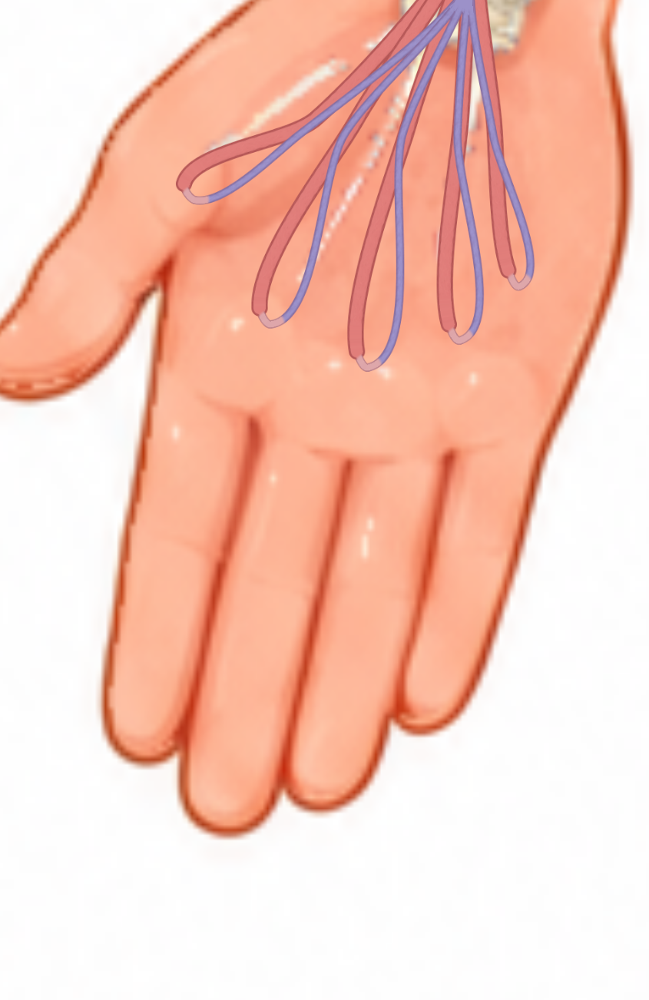
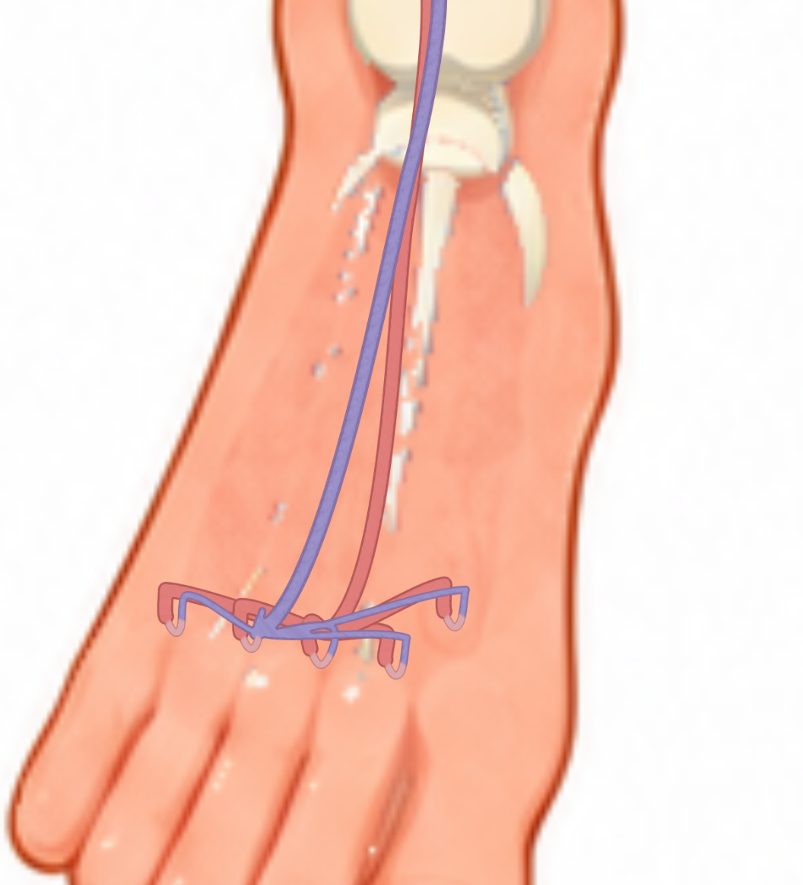
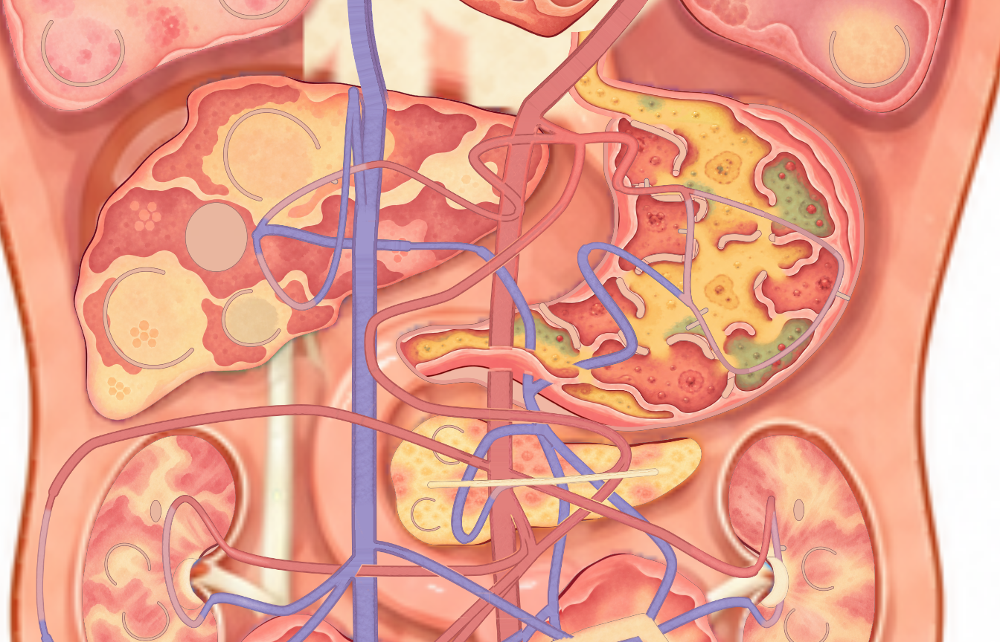
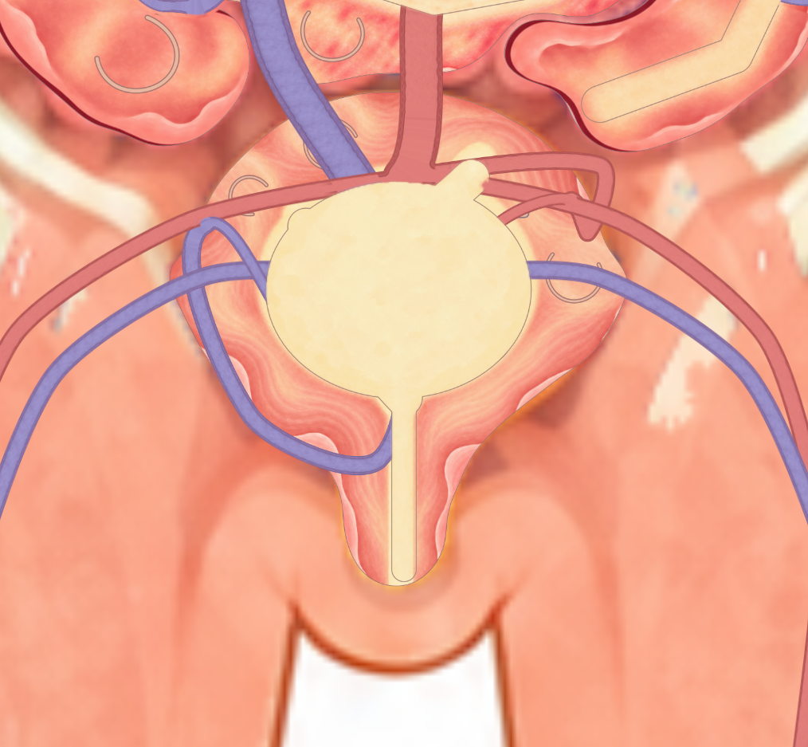
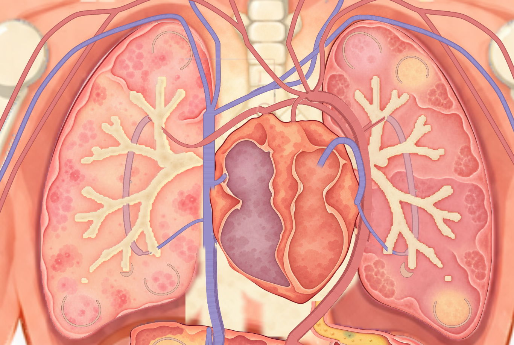
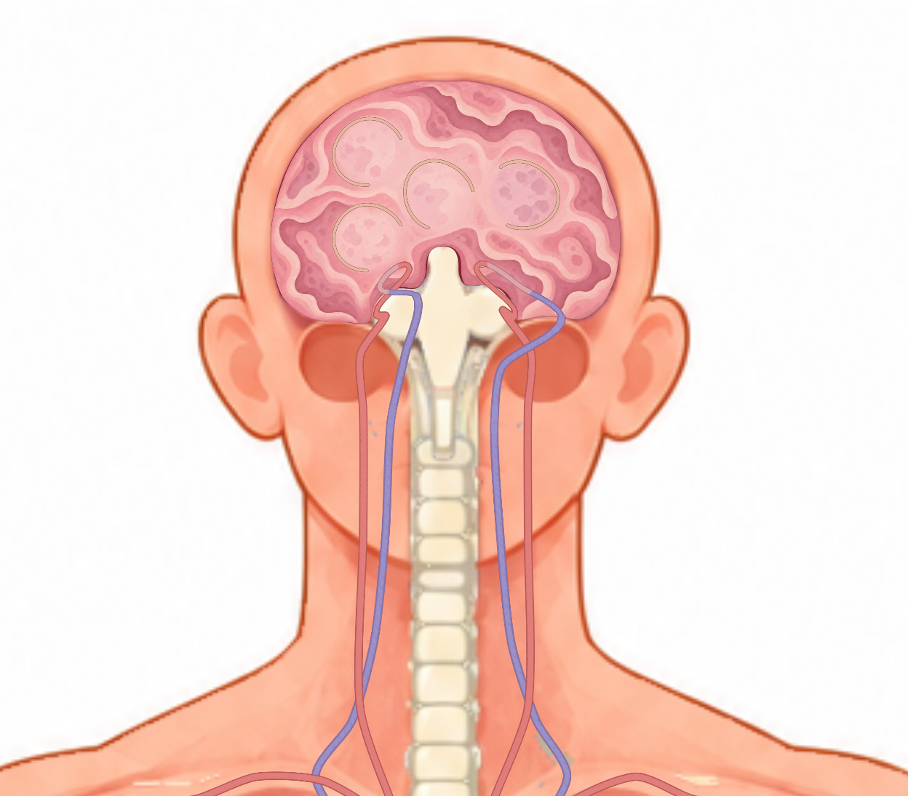

P2 · 待整理手指分支停在手掌
两手各五条供血—交换—回流分支的实际端点位于手掌，尚未延伸到对应手指末端。路线能走通，但位置与底图的手指不符。需要同步调整真实路线、末端接口和显示素材。

另一侧截图
P2 · 待整理脚趾分支集中在脚背
两足各五条分支集中在足背，未对应脚趾末端；支路回折较硬，彼此拥挤。现有回路通行通过，仍需同时整理路线与底图。

另一侧截图
P2 · 待整理上腹部回折和交叉难辨认
胰腺上方及肾脏入口周围多条血管投影重叠，局部回折较大、层级提示不足，容易把交叉看成分叉。连接处移动测试通过；本次未删除真实管线或更改接口。

P2 · 待整理膀胱上方回折过于显眼
膀胱上方右侧红色供血支路形成明显回折，与骨盆主干挤在一起，入口方向不清楚。供血及回流连接测试通过，需整理局部弯曲和显示层次。

P3 · 待整理心脏上方管壁小缺口
心脏上方横向红色血管的下沿仍有一个小缺口；部分蓝色管线的贴图过渡也比较突兀。属于画面接缝，当前连接与移动检查没有发现对应的物理断路。

P3 · 待整理脑底入口回折拥挤
左右脑底血管入口处有较集中的回折，投影交叉的前后关系不够直观。连接及通行检查通过，可在后续整理入口曲线时改善。
